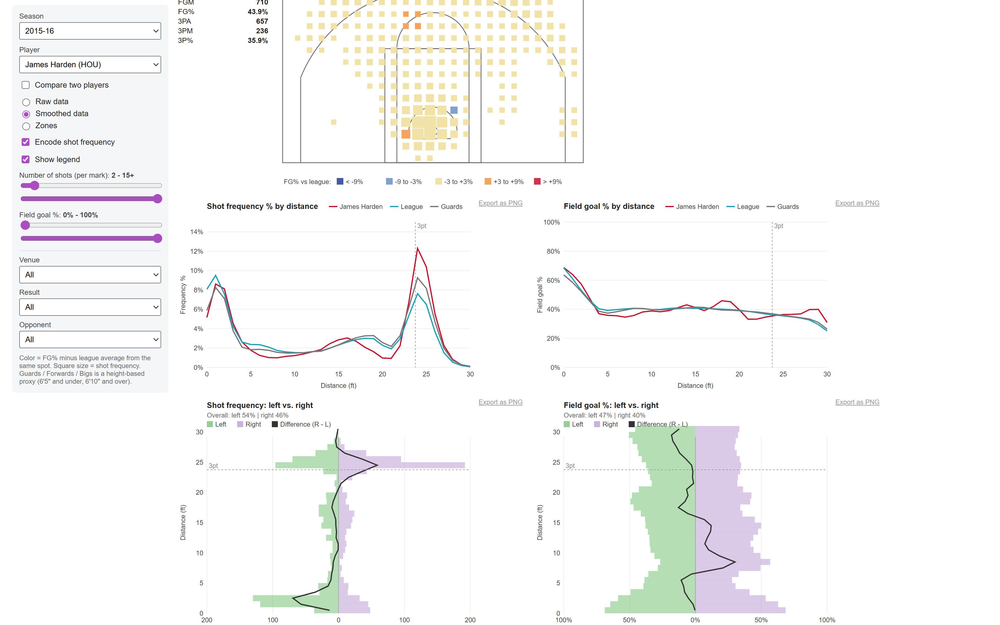
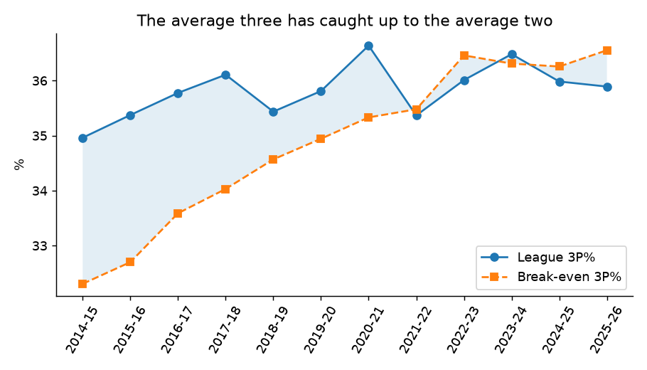
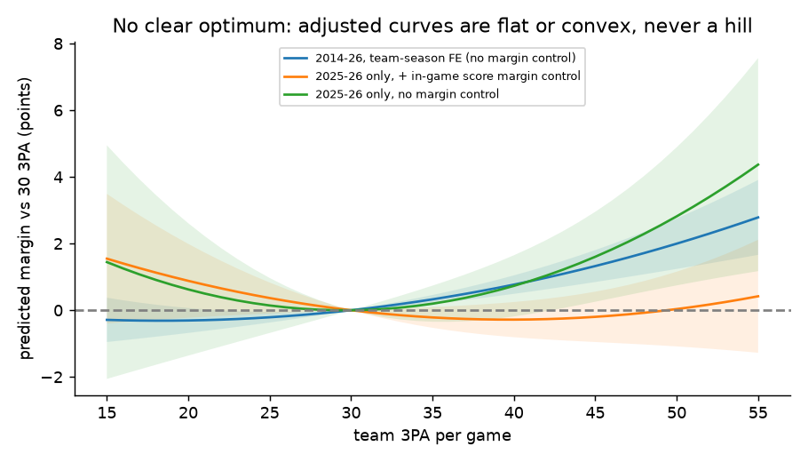
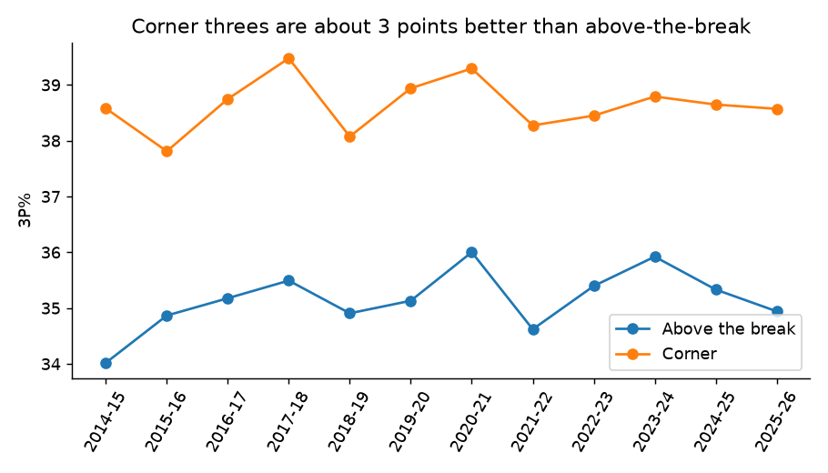
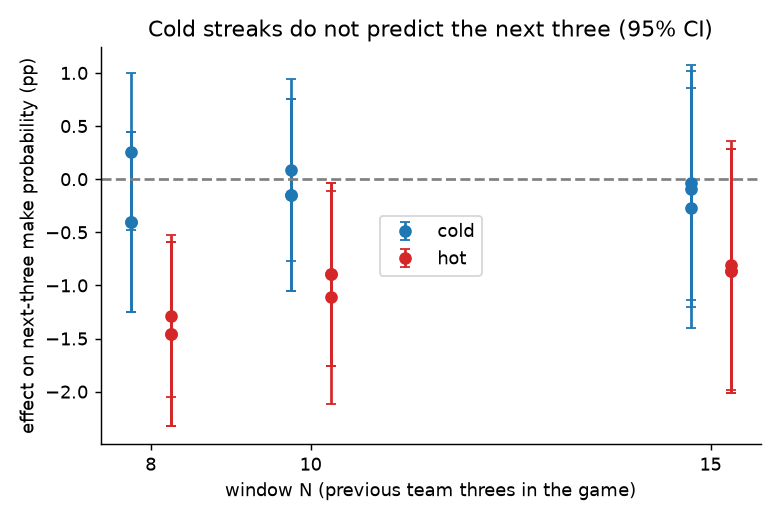

How many threes should an NBA team take, how accurate must a shooter be, and does being "cold" matter? NBA.com data, 2014-15 to 2025-26.
Open the shot explorer View the code and write-up
The shot explorer is a Buckets-style player view: court map of where a player shoots and how well compared with the league, shot frequency and FG% by distance, left vs right splits, home/away, win/loss and opponent filters, and two-player comparison. Pick any player-season since 2014-15.





Full explanation of data, methods and conclusions: see PROJECT_OVERVIEW.md in the repository.